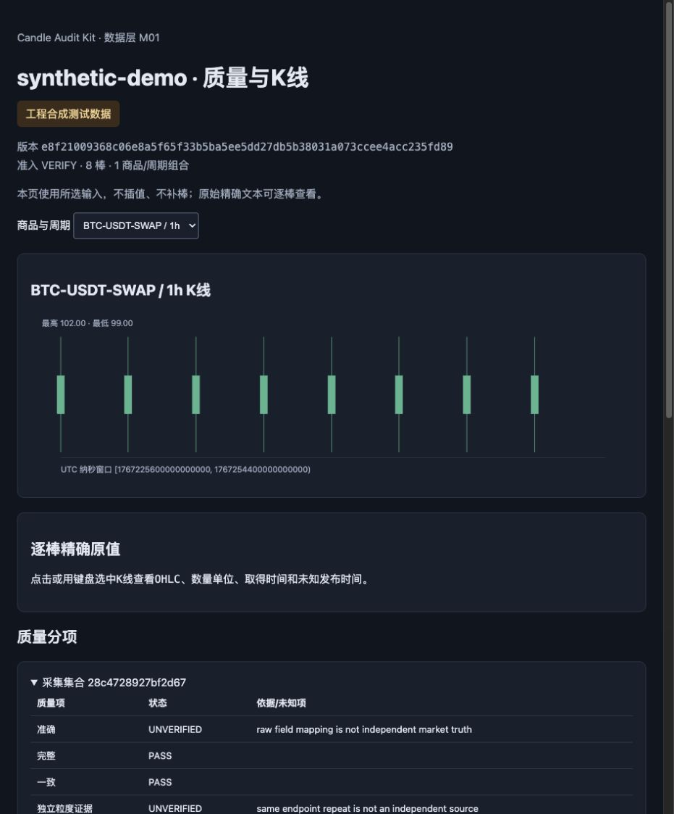

PYTHON · OFFLINE · MIT
Candle Audit Kit
Check OKX candle files.
Keep the evidence.
CSV ↔ native JSON · exact decimals
Gaps, duplicates & quantity units
DuckDB queries · Parquet datasets
Real demo: 8 synthetic bars → 2 four-hour bars
ACTUAL REPORT · SYNTHETIC DATA

github.com/linqingzi/candle-audit-kit
0.1.0rc1 · source accuracy stays UNVERIFIED